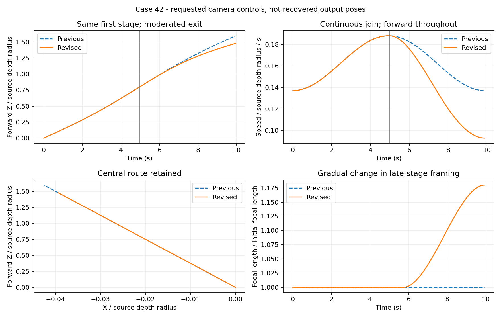

The first stage and central forward route are retained. The second stage travels about 15% less distance and slows gradually near the exit, with the original join velocity and heading. Focal length increases smoothly by 18% in the latter part of stage two to limit peripheral close-ups.

These are requested camera controls in an estimated source coordinate system, not camera poses recovered from the generated video. Unknown rear geometry remains a generated approximation.